| 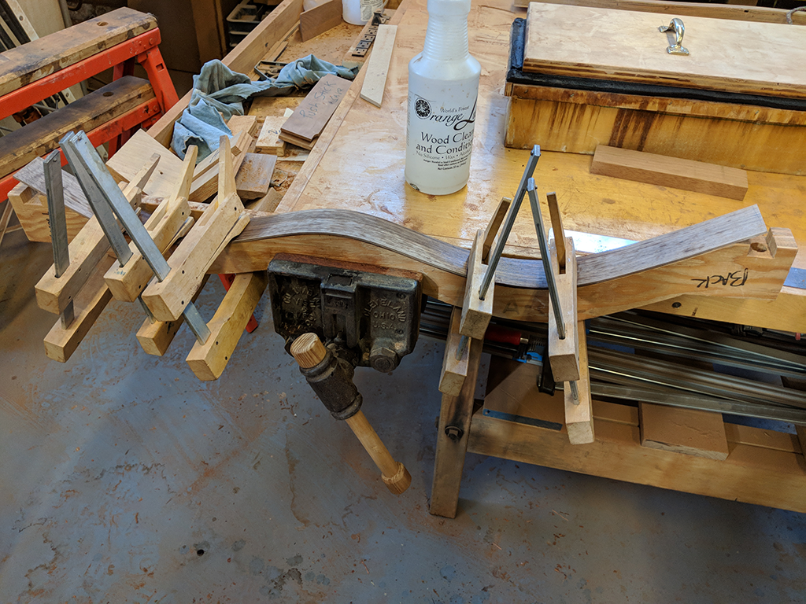 | 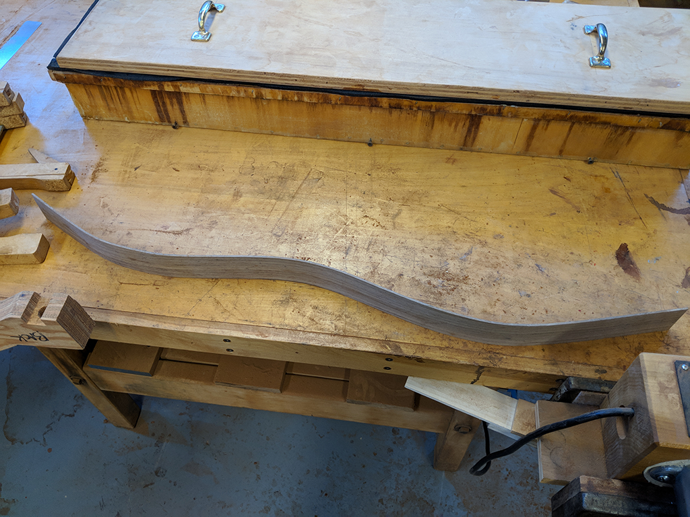 | 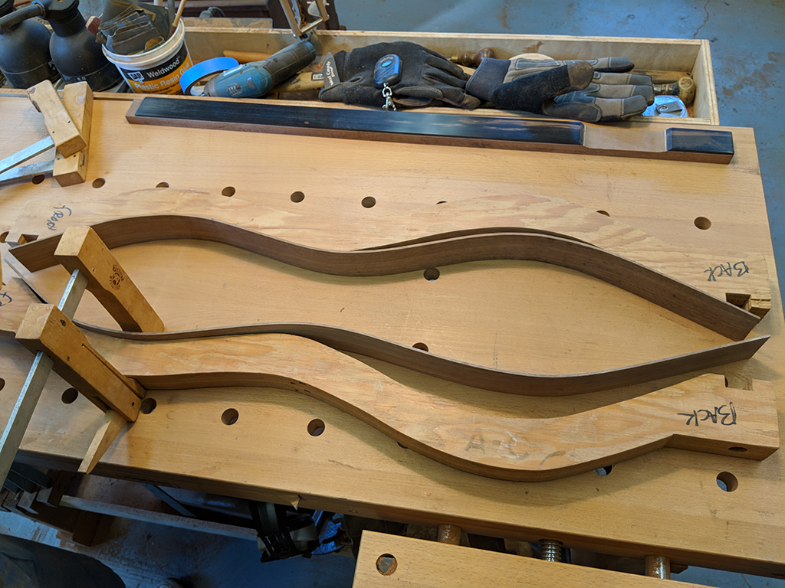 |
|---|---|---|
| 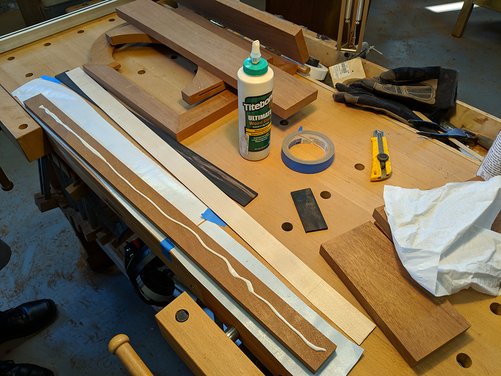 | 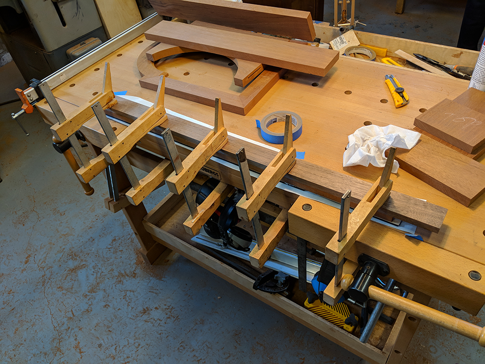 | 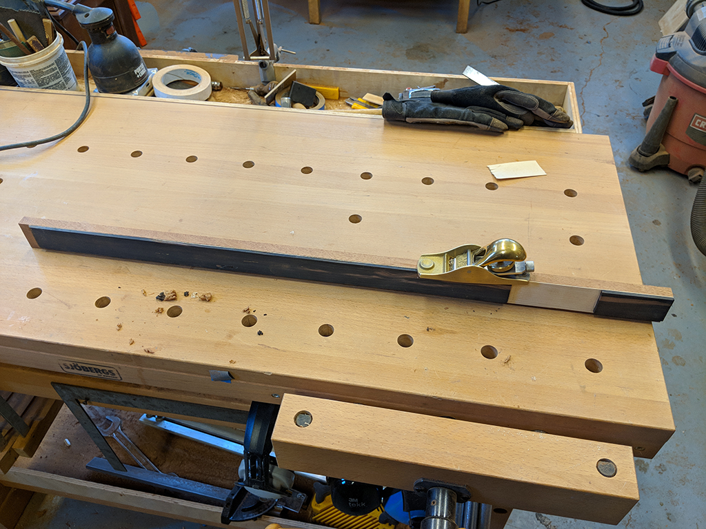 |
Update 2: Seeing the First Finished Pieces
By Mark on March 2, 2018
I am now approxiatemly a month into the building proccess, and I love the proccess more each day.
Now that I have a strong sense of the internal and external shape and the tools availible in the shop, I do not face as many "stumped" situations where I do not know the best way to proceed. I now feel comforatable making decisions on how I will build a piece of the instrument.
However, I have started to see that my physical woodworking skills are inexperienced compared to Father Martin's. Sometimes he can perform a certain cut or manuver much better than I can simply because of his years of experience. For example, when sanding the top of the fret board, Father Martin has able to teach me how to imrpove my method by sanding in a different position. A simple fix, but one that improves the quality of the sanding job.
What's Been Built
Since the last project update, I have finished forming the side panels. They still need to be sanded, but their shape is similar to that of the final dulcimer. This can be seen in the top row of images. During the proccess of steaming and forming the sides, I cut the 3 pieces of wood that I needed to build the fretboard. I then glued these pieces together, as seen in the second row of images. After the glue had dried, I sanded the top of the fretboard (the black strip). This took longer than I anticipated as I needed to start as a very low grit and end with 600.
I also cut interior trim. This took a long time as well, as I needed to make hundred of small cuts (fourth row of images).
With the sides formed, I drew the outline of my dulcimer so that I coud build a template for my end blocks. In the next two weeks, I will measure the other end block and cut and glue both of them to the side panels. After that, I hope to finish trimming the fretboard and adding the frets.
| 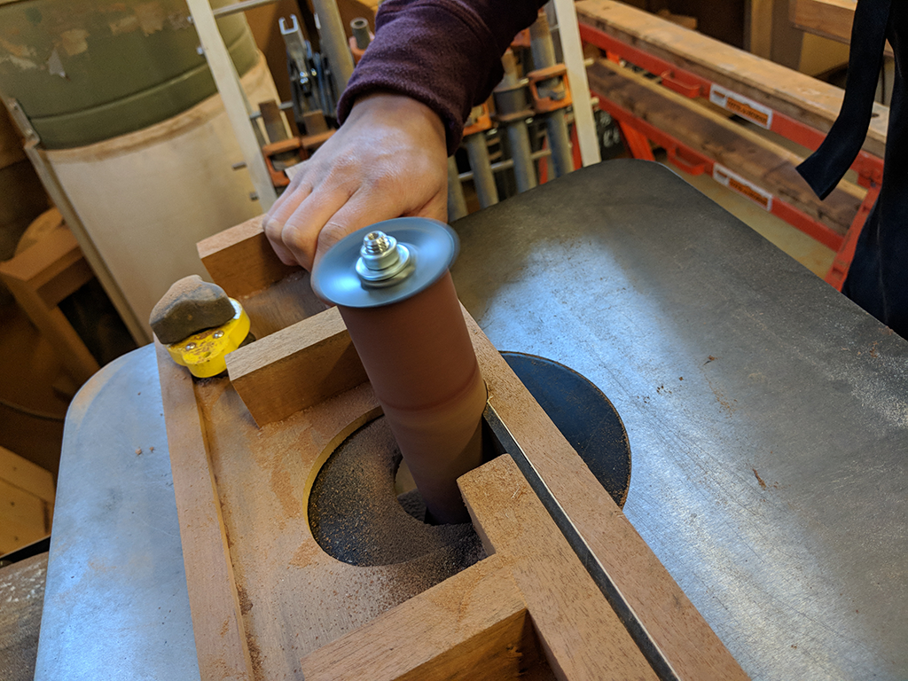 | 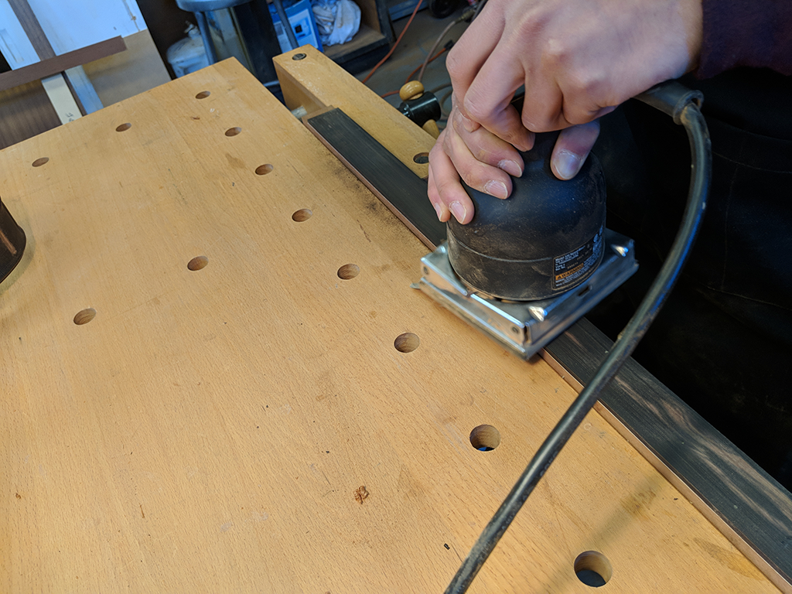 | |
| 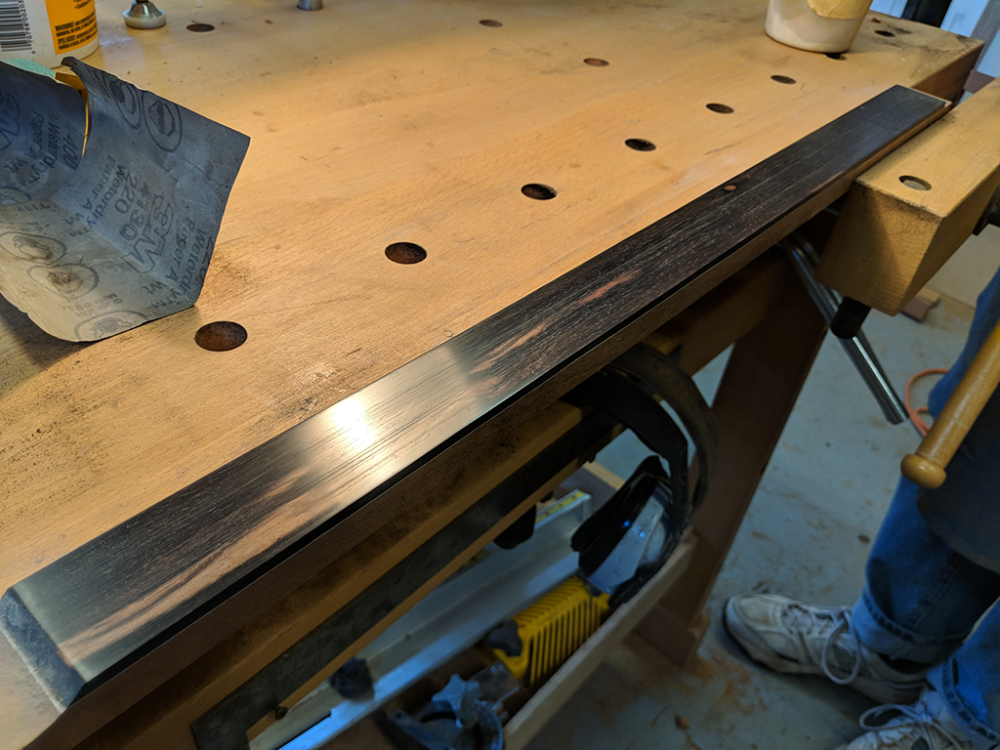 | 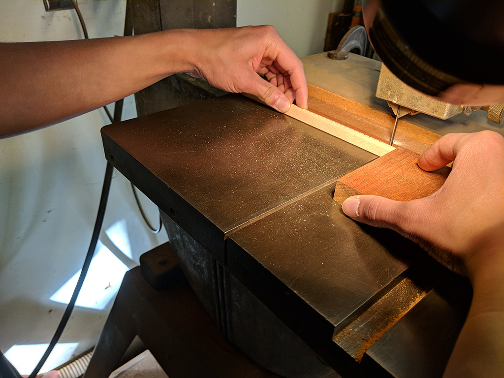 | 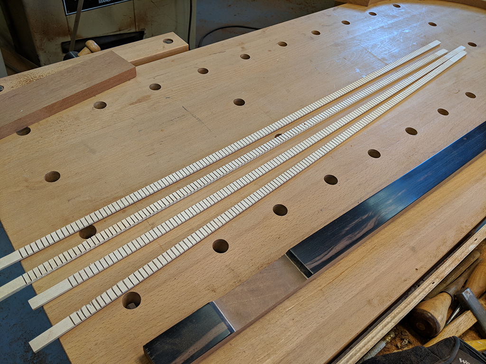 |
| 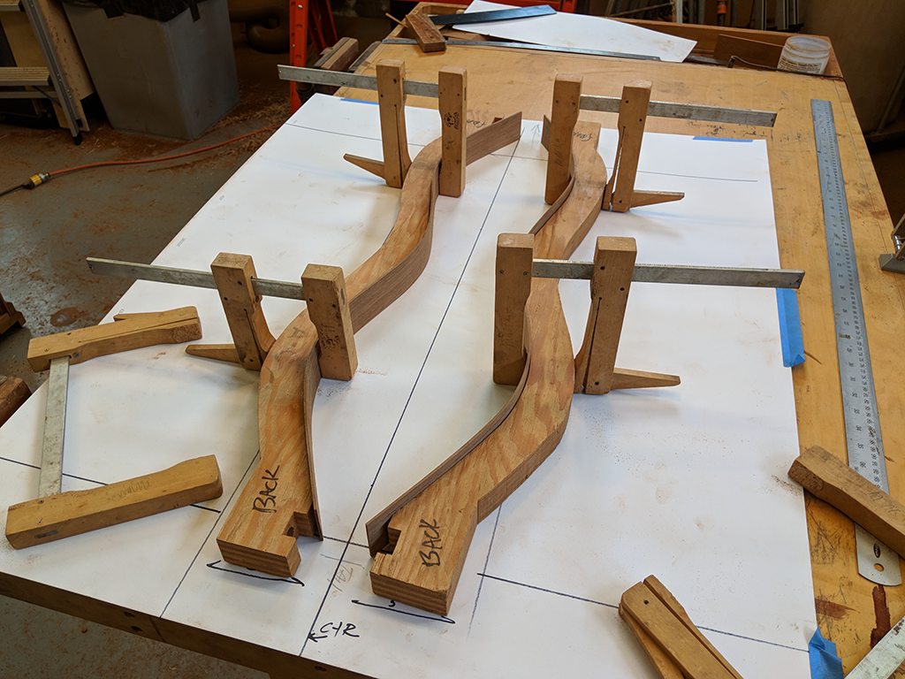 | 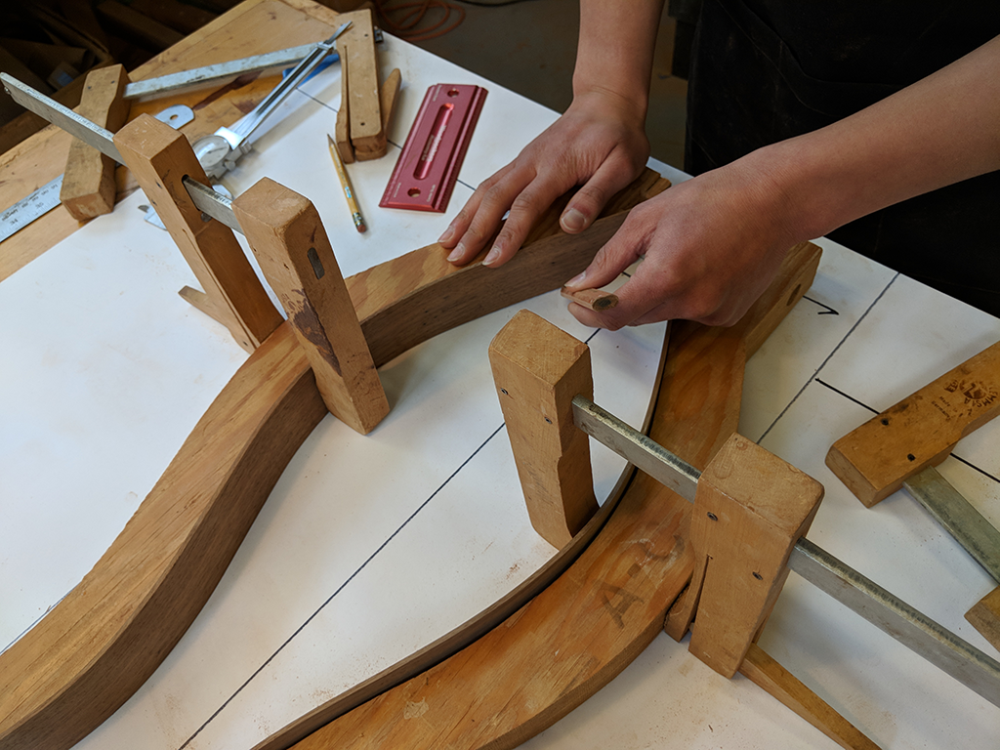 | 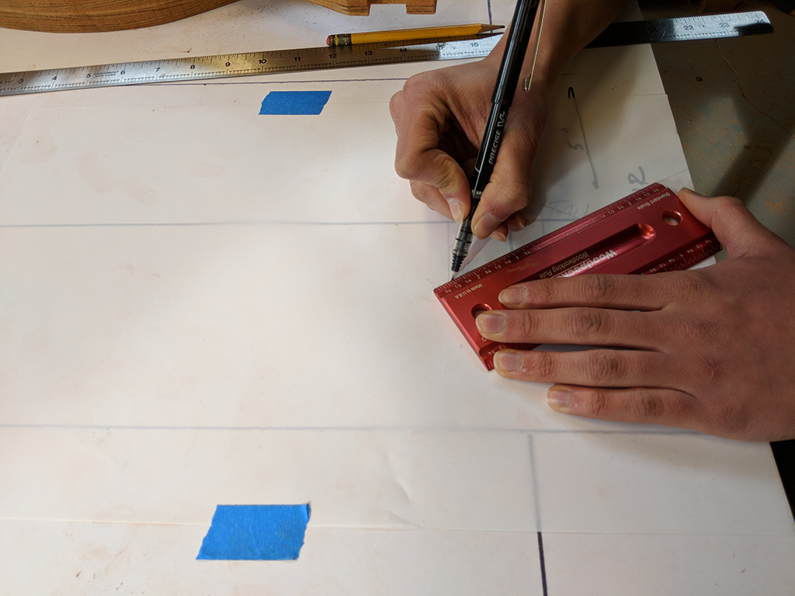 |